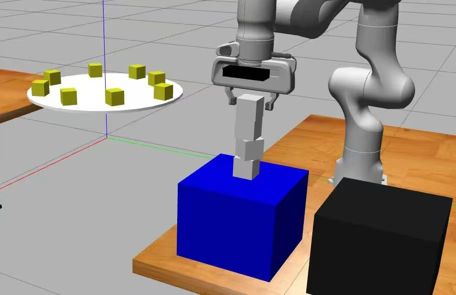

Selected project · MEAM 5200
Autonomous cube stacking
Static and dynamic block stacking with a Franka Emika Panda, tested in Gazebo/RViz and on the physical robot.
- Context
- Introduction to Robotics
University of Pennsylvania · Fall 2025 - My role
- Perception and kinematics integration, grasp tuning, dynamic-block capture logic, and supporting planning work
- Status
- Completed course project



The task and design choice
Our four-person team built a pipeline to detect, grasp, and stack static blocks, then capture moving blocks from a rotating platform within a timed competition. An end-effector camera detected AprilTags for the static blocks. We tested the sequence in Gazebo and RViz, then tuned it on a Franka Emika Panda.
The final competition strategy favored repeatable, task-specific poses over continuous online planning. It combined camera-based static detection with staged inverse-kinematics moves, a pre-tuned dynamic waiting region, and gripper-width checks.
Team 9: Gabriel Huang, Parra Wang, Heng Yang, and Yishen Zhang. Source: MEAM 5200 Final Project Report, §§1–2.1.
Simulation and hardware
Both recordings were supplied with this project update. Website copies are silent; the originals are unchanged.
Static pick and place
From a fixed spotting pose, we combined the base-to-end-effector transform, the camera mounting transform, and the camera’s block detection to express the block pose in the robot’s base frame:
T0block = T0ee Teecamera Tcamerablock
The transform chain used for static-block localization.
Hardware-specific position offsets accounted for systematic detection and mounting differences. The block orientation also mattered: yaw misalignment produced skewed stacks, so orientation alignment became part of the approach and placement sequence.
- Spot and detect. Move to a known camera pose and estimate each static block’s position and orientation.
- Hover, align, descend. Solve IK for intermediate poses before reaching the grasp. The report uses 10 cm and 7 cm hover stages, followed by a 1 cm grasp offset.
- Check before lifting. Accept the grasp only when the measured gripper width falls inside a tuned interval; otherwise retreat, reopen, and retry.
- Place and update. Return through a safe height and raise the placement target according to the number of blocks already stacked.
Source: project report, §§2.2–2.4. These stages describe the implemented task-specific sequence.
Capturing moving blocks
In the dynamic phase, the arm moved to a pre-tuned waiting pose near the rotating platform’s edge. A short sweep placed the open gripper along the expected block path. The gripper then closed periodically; width feedback determined whether a block was captured.
A successful capture triggered the return and stacking sequence. If no block was captured for a period, the arm returned to its waiting pose and attempted another sweep. This avoided continuous camera-based tracking and repeated online planning during the dynamic phase, but depended on the platform geometry and tuning.
As the tower grew, the forearm could collide with it during the return motion. Additional safe transitions and a higher pre-placement pose addressed that issue in testing.
Source: project report, §§2.5–2.6 and §3.
Tests and competition
Simulation, hardware development tests, and the timed competition produced different outcomes. They are kept separate here.
| Run | Time | Report result |
|---|---|---|
| Day 2, test 7 | 234 s | 4 static + 4 dynamic blocks stacked |
| BLUE competition round | 180 s | 4 static + 1 dynamic in the report’s results table |
| RED competition round | 180 s | 2 static + 0 dynamic in the report’s results table; placement position/orientation problems |
The eight-block development run took longer than the competition’s three-minute limit. It is not the timed competition result. The BLUE and RED outcomes also differed because the placement offsets and orientations were not equally well tuned.
Source: project report, §3, Tables 2–3 (pp. 9–10). The competition table labels its counts “captured”; the development table labels them “stacked.”
Limits and supporting work
The main limits were task-specific waiting poses, calibration offsets, gripper-width thresholds, and the conflict between clearing a tall stack and staying within joint limits. A successful simulator run did not eliminate the need for hardware tuning.
Supporting coursework included potential-field planning and RRT. The final competition report, however, describes a staged, fixed-pose strategy rather than using those planners online for each dynamic grasp. Local RRT-Connect near the tower appears in the report as a possible future change, not a completed part of the competition pipeline.
Sources: project report, §§2.1 and 4; résumé entry for supporting planning work.